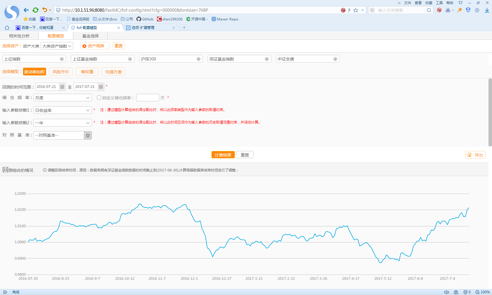
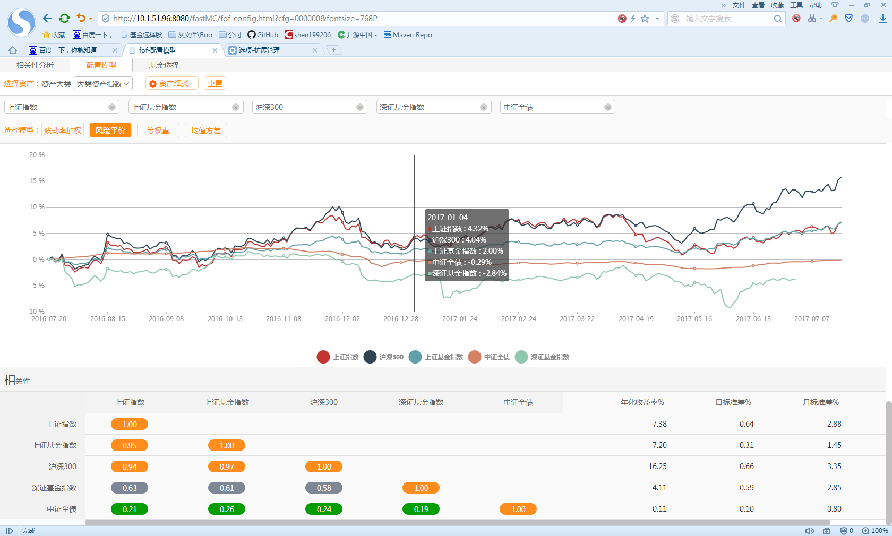
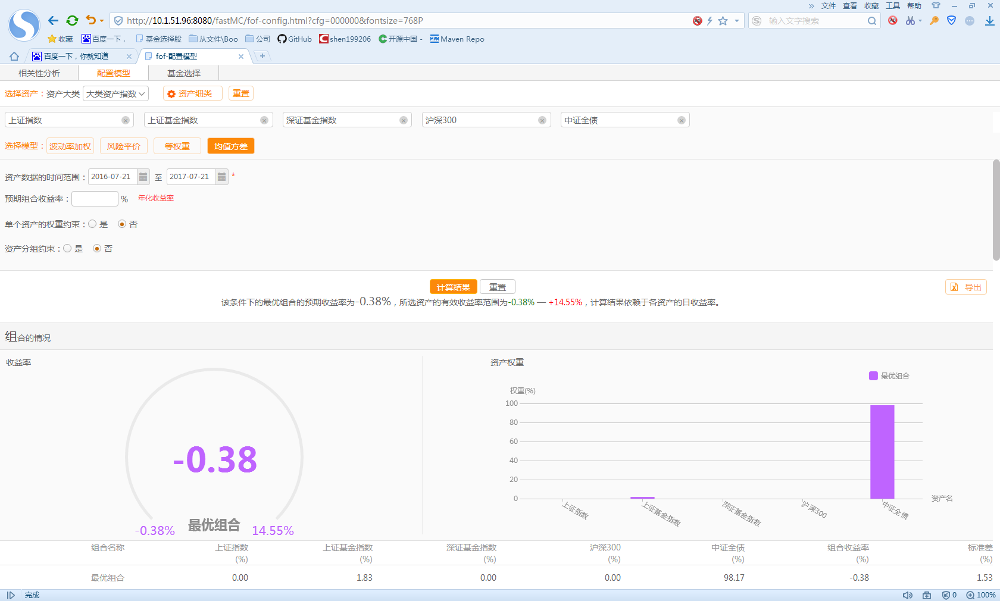
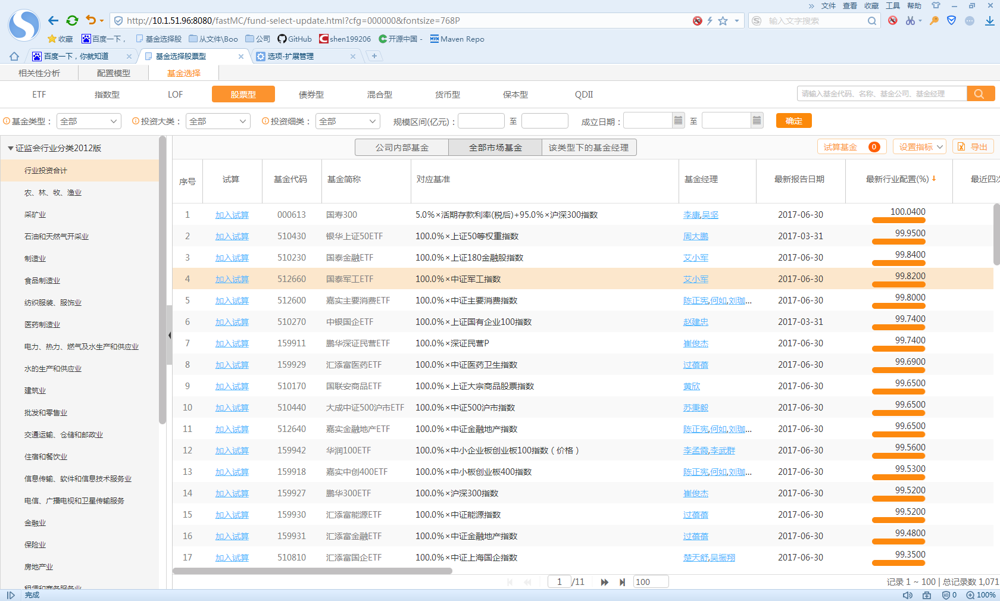

个人资料
姓名：ninuxGithub
性别：男
年龄：26
英文名：ninuxGithub
学历：学士
我是一个热爱钻研计算机技术的青年，从小开始对计算机有极大的兴趣。目前我专注网站开发领域。我还自己发起建立了一个制作游戏的团队，希望能和大家合作，一同创造出属于我们自己的原创作品。
掌握的技能
- 1、精通Java语言，具有扎实的编程基础和良好的编程习惯以及代码规范。
- 2、有扎实的JavaWeb基础,熟练掌握Servlet/JSP和JSTL标签使用。
- 3、熟练掌握Struts2、Hibernate、Spring、Mybatis、SpringMVC等开源框架技术，并能够用各大框架进行大型项目的开发。
- 4、熟练编写Javascript代码，熟练使用jQuery以及ajax异步交互技术等前台页面技术。
- 5、熟悉Oracle、MySQL、SQL Server数据库，熟练掌握sql语句。
- 6、熟悉SVN、Maven， Git等项目开发及管理工具。
- 7、熟练掌握spring boot 微服务搭建和使用。
- 8、熟练使用freemarker 进行word报表导出， 以及excel 报表的导入导出。
- 9、熟练使用恒生的light框架（基于vue 1.4.x , 目前推出light2.0） 和vue+webpack。
工作经历
公司名称：上海恒生聚源数据服务有限公司
工作时间：2015-10-14——现在
工作描述： 更具规划的需求分析实现项目的业务开发
项目经验
- 2018.04: 财富有约的直播平台
- 2018.01：开始研究图片转视频播放+配音以及视频直播的技术
- 2017.11：智能小梵个股诊断
- 2017.07: 梵思终端的长江养老项目的开发
- 2017.03：梵思终端的fof工具
- 2016.04：财达项目（1-5期）
- 2015.02：投研平台代码研读
- 2015.11：梵思移动端的行情开发
个人作品

波动率加权

风险评价

均值方差

基金选择